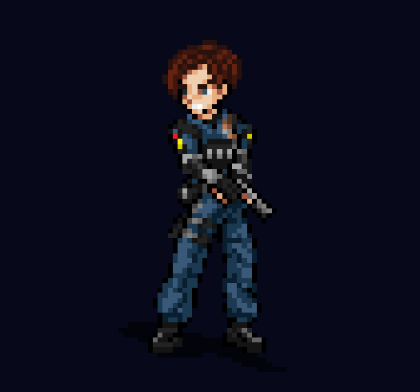
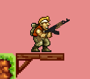
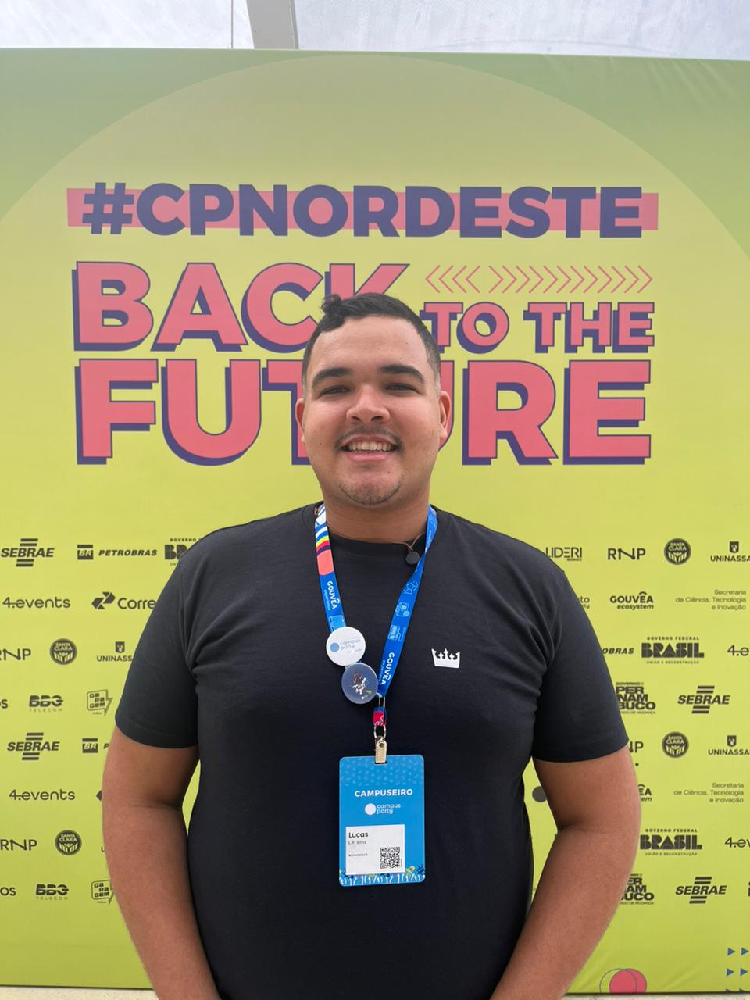
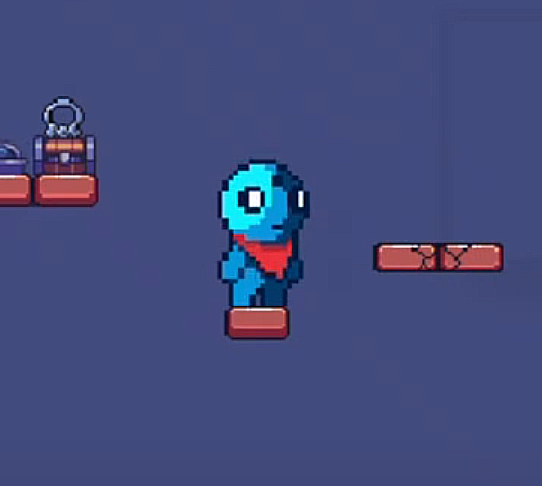
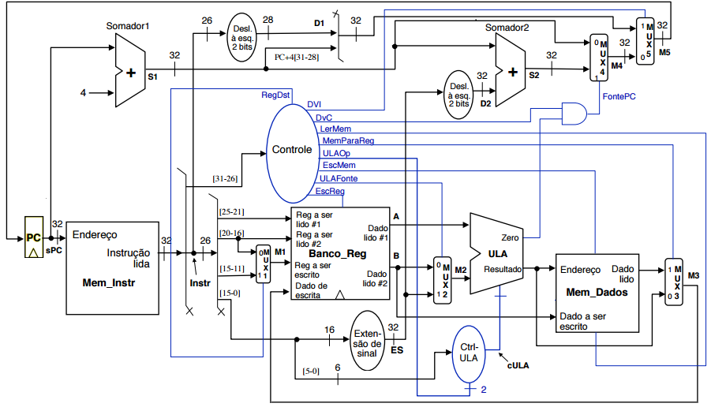
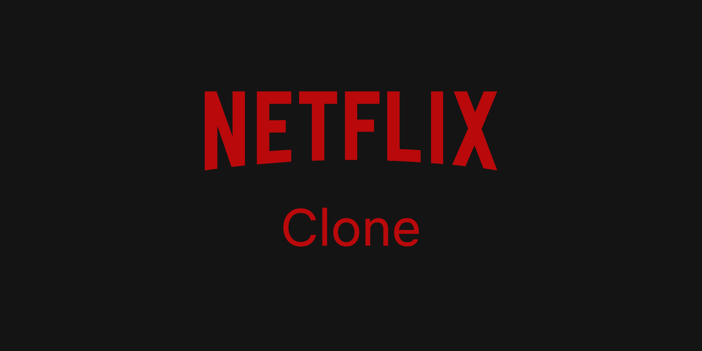
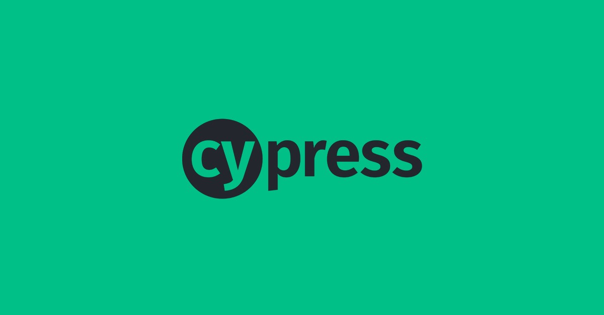

Olá, eu sou
Lucas Lins
Desenvolvedor Fullstack
Comecei no suporte de TI, passei por testes de software e hoje sou um desenvolvedor fullstack com olhar de QA. Gosto de entender o sistema inteiro, do pequeno bug à arquitetura.
experiência
EXPERIENCE
My professional journey includes experience in software development, quality assurance, software testing, and IT support. Throughout these roles, I have worked with different technologies and contributed to improving software quality and development processes.
Z.RO Bank
Fullstack Developer
I develop backend services and APIs using NestJS and TypeScript, integrate external APIs, maintain automated tests with Jest, and contribute to code reviews, database scripts, and software quality practices.
- TypeScript
- NestJS
- Node.js
- Jest
- REST APIs
- Git
TCE-PE
Software Testing Intern
I performed manual and automated testing with Cypress and Gherkin, documented test cases and requirements, managed tests with Squash TM, and monitored quality metrics through reports. I also contributed to process improvements and test documentation.
- Cypress
- Gherkin
- Git
- End-to-end Testing
- BPM
- Squash TM
SOPECE
IT Support Intern
I provided technical support and computer maintenance, managed the academic system and network infrastructure, and assisted users through in-person, phone, and online support.
- Technical Support
- Computer Maintenance
- Network Administration
- Help Desk
- User Support
SICREDI Recife
Administrative Assistant Trainee
I supported administrative activities by managing physical and digital files, organizing documents, controlling office supplies, and assisting the public in person.
- File Management
- Inventory Control
- Customer Service
- Administrative Support
PROJECTS
A selection of my academic and personal projects, highlighting my experience in software development, game design, and automated testing. Each project represents an opportunity to explore technologies, solve problems, and develop practical skills.
Cooks' Books
A platform for creating and sharing personal recipe collections. Users can organize their recipes in digital notebooks and discover recipes from other users.
- Java

Echo
An accessible horror game prototype developed with Unity. The project explores audio-based game design and interfaces to create an experience for blind players.
- Unity
- Game Design
- Accessibility

Steel War
A 2D action shooter prototype developed with Unity, inspired by classic games like Metal Slug and featuring point-and-click mechanics.
- Unity
- Game Development

My Portfolio
My personal portfolio website, created to present my professional experience, projects, and academic background. It is continuously evolving as I learn new technologies.
- HTML
- CSS
- JavaScript

V01D
A 2D puzzle-platformer developed in C using the Raylib library. As part of a six-person team, I developed the first level and contributed to the menu design.
- C
- Raylib
- Game Development

32-bit Single-cycle MIPS Processor
A simplified 32-bit single-cycle MIPS processor implemented in Verilog, modeling the datapath and control unit and supporting a fundamental subset of MIPS instructions.
- Verilog
- Computer Architecture
Targets Manager
A command-line task management application built with Node.js. It allows users to create, view, complete, and remove personal goals, with data persistence in a JSON file.
- JavaScript
- Node.js

Streaming Page
A fictional streaming website developed in a group project at Softex PE. It simulates a movie and series platform with pages for home, listings, and content details.
- HTML
- CSS

Cypress POM Automation
An automated testing suite for a system managing shelter residents. The project included end-to-end tests using Cypress and the Page Object Model, alongside manual, API, and UI testing.
- Cypress
- JavaScript
- POM
- API Testing
EDUCATION
My academic background combines formal education in Computer Science, technical training in Systems Development, and professional training in Front-End Development.
Bachelor's Degree
Computer Science
UFRPE
2020 — 2026
Technical Degree
Systems Development
ETEPAC
2021 — 2022
Training Program
Front-End Development
SOFTEX
Completed
PAPERS
Contributed to two academic papers on software engineering practices and process improvement.
Communities of Practice in Large-Scale Agile Development: A Systematic Literature Mapping
The paper explores the use of Communities of Practice (CoPs) to scale agile methods in large software development projects. Through a Systematic Literature Mapping (SLM), the study found that CoPs can be effective in promoting coordination between teams, knowledge sharing, and an open community culture. These factors are crucial for successful agile adoption in large-scale projects. This paper was written during a scientific initiation project with Marcelo Marinho from UFRPE.
Evolution of the TCE-PE Testing Process: Preliminary Results of a BPM project
In this paper, we describe the successful experience of a pilot project to improve software testing processes at the TCE-PE, carried out through a technical cooperation between the institution and UFRPE. The pilot used principles of the BPM methodology to identify needs, propose changes, and monitor the testing process in a software development project. We report not only initial results but also lessons learned from this government-academia partnership initiative.
CONTACT
Feel free to reach out for collaborations, opportunities, or just to say hello using the form below.